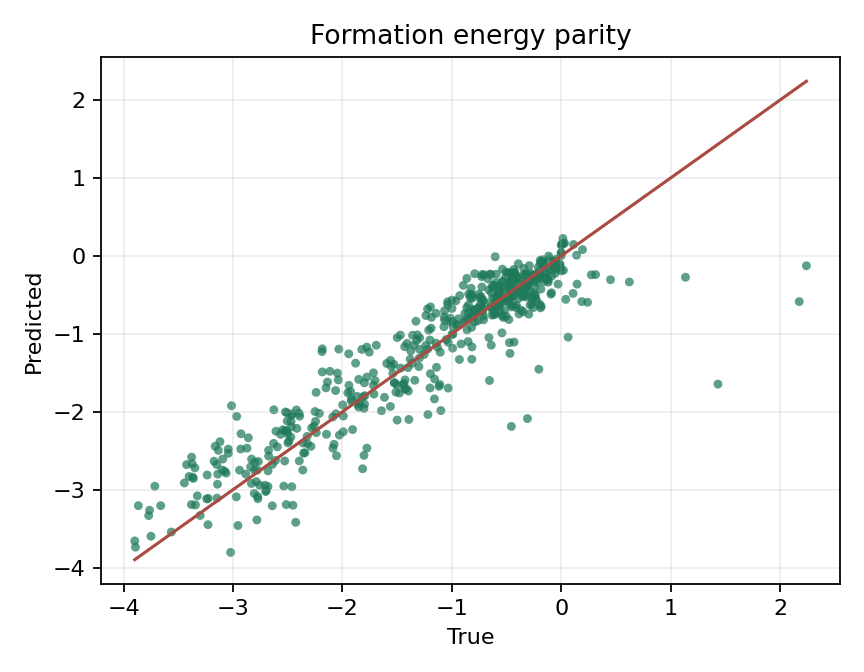
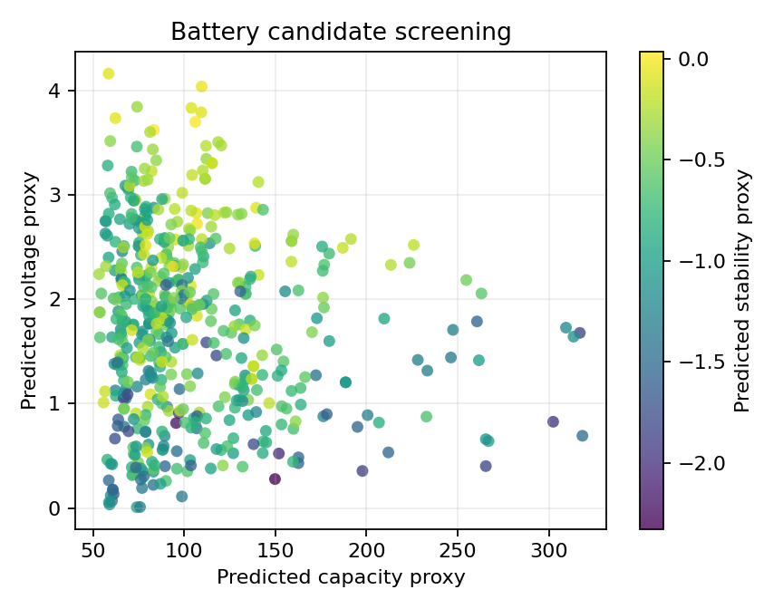
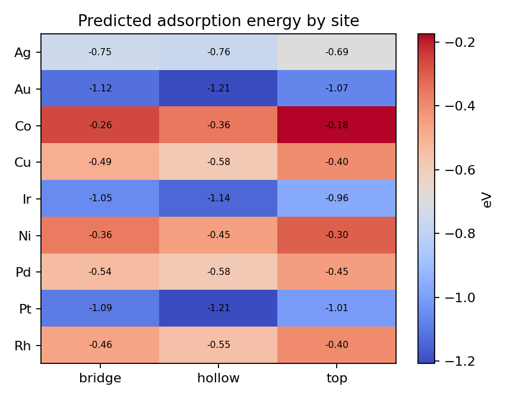
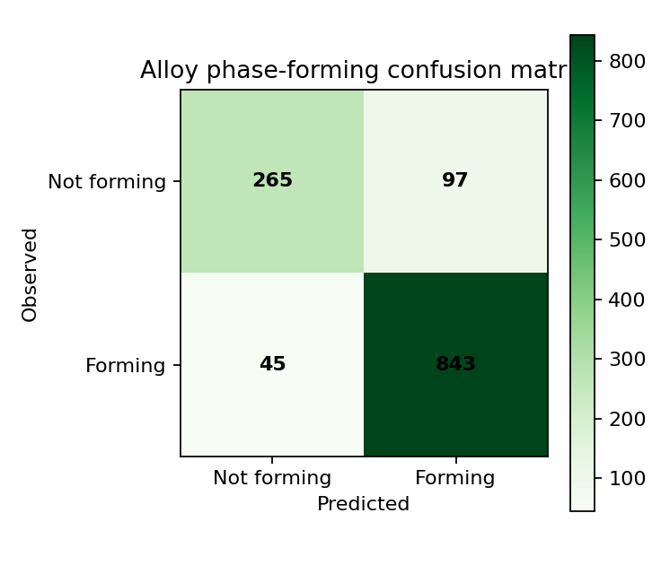

1.1
晶体稳定性快速预测模型
使用晶体图卷积神经网络预测无机晶体形成能与热力学稳定性，支撑大规模结构筛选。
- 关键词
- 形成能预测、图神经网络、CGCNN
- 技术栈
- PyTorch、DGL、Pymatgen
- 输出
- 形成能、稳定性排序、结构嵌入表示
Machine Learning Models
使用晶体图卷积神经网络预测无机晶体形成能与热力学稳定性，支撑大规模结构筛选。
基于 Materials Project 数据构建电压、容量、稳定性多目标预测模型，筛选高潜力正极材料。
面向催化剂表面吸附能预测，结合 ASE 构造表面与吸附构型，识别潜在高活性位点。
基于成分特征和集成学习预测高熵合金相形成规律，辅助新型合金成分设计。
Pipeline
Materials Project、实验数据、DFT 计算结果与结构文件。
使用 Pymatgen 与 ASE 清洗晶体、表面、成分和目标属性。
晶体图、组成描述符、位点环境、热力学与相图特征。
CGCNN、随机森林、神经网络与多目标优化模型。
输出稳定性、性能分数、可解释性结果和候选材料清单。
Model Outputs
已展示 baseline 运行结果；页面也会尝试读取 results/model_results.json 更新数据。
PyTorch CUDA 11.8 MLP baseline，使用结构和成分描述符预测形成能。当前是快速 baseline，不是完整 CGCNN benchmark。

| material | formula | predicted_e_form | e_above_hull |
|---|---|---|---|
| mp-282 | TiF2 | -3.8047 | 0.2600 |
| mp-6134 | LiCaAlF6 | -3.7373 | 0.0000 |
| mp-6591 | SrLiAlF6 | -3.6575 | 0.0000 |
| mp-7104 | CsCaF3 | -3.5973 | 0.0000 |
| mp-22338 | EuOF | -3.5427 | 0.0000 |
Scikit-learn 多输出随机森林，用氧化物数据构造电压、容量、稳定性代理目标进行多目标筛选。

| material | pred_voltage | pred_capacity | score |
|---|---|---|---|
| ScNdO3 | 4.0396 | 109.5925 | 2.1233 |
| AcTmO3 | 4.1634 | 58.5480 | 1.9982 |
| EuScO3 | 3.7005 | 106.0968 | 1.9966 |
| ScPmO3 | 3.7928 | 109.3632 | 1.9792 |
| ScGdO3 | 3.8349 | 103.9047 | 1.9759 |
ASE 生成 fcc(111) 表面和 top/bridge/hollow 位点，训练梯度提升吸附能 baseline。当前吸附能是合成代理目标。

| material | site | pred_adsorption_energy | activity_score |
|---|---|---|---|
| Ag(111) | hollow | -0.7622 | -0.0378 |
| Ag(111) | bridge | -0.7453 | -0.0547 |
| Ag(111) | top | -0.6908 | -0.1092 |
| Ir(111) | top | -0.9634 | -0.1634 |
| Pt(111) | top | -1.0078 | -0.2078 |
Random Forest 分类器，使用成分熵和元素统计特征预测金属玻璃形成能力，作为合金相形成代理任务。

| material | phase_probability | observed_gfa |
|---|---|---|
| Fe81B12C7 | 1.0000 | True |
| Gd5(Al14Ni)3 | 1.0000 | True |
| Ca8.5La56.5Cu35 | 1.0000 | True |
| Mn29.5Co46.5B24 | 1.0000 | True |
| Zr10Fe89.946Ge0.054 | 1.0000 | True |
Roadmap
完成数据 schema、清洗脚本、特征缓存和每个任务的 baseline 模型。
引入 CGCNN、多目标优化、表面位点特征和高熵合金集成学习。
加入特征重要性、误差分析、候选排序和可视化仪表盘。
Deliverables